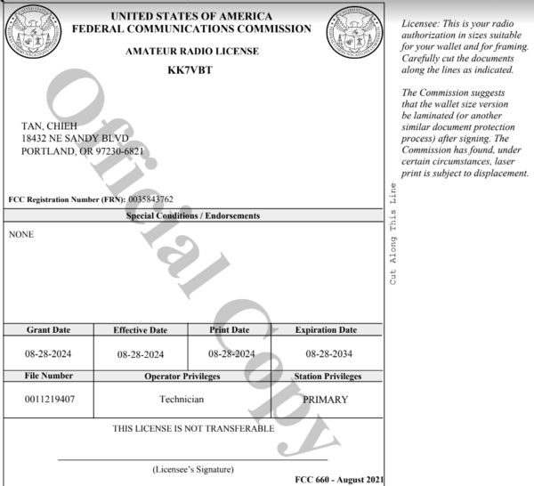
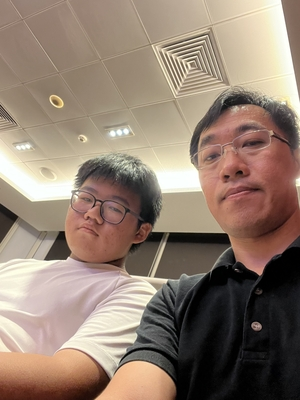

Name: Tan Chieh Ho
Age: 13
Nationality: Malaysian
School: Penang Free School
Grade: 7 or Form 1
I was born and raised in Georgetown, Penang, Malaysia, growing up with a love for drawing and painting.
I learned from an early age to be determined, meaning to make a decision or come to a conclusion about something.
Some of my favorite early memories are of our family traditions, all of which helped me develop a sense of curiosity and excitement for learning.
Being close to family has shaped my perspective and helped me find comfort and inspiration in all things around me.
My callsign

A copy of my license

Me and my dad at the SARTS Meeting.